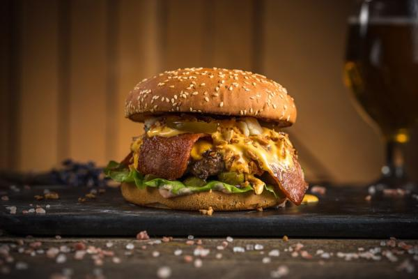

Fetti's Burger

Description
Fetti's Burger starts with a 100% pure beef patty seasoned with just a pinch of salt and pepper.
Ingredients
- Bacon
- Egg
- Mushroom
- Jalapenos
- Secret Sauce
Steps
- Preheat an outdoor grill for high heat and lightly oil grate.
- Whisk together egg, salt, and pepper in a medium bowl. Add ground beef and bread crumbs and mix with your hands or a fork until well blended.
- Place patties on the preheated grill. Cover and cook 6 to 8 minutes per side, or to desired doneness.